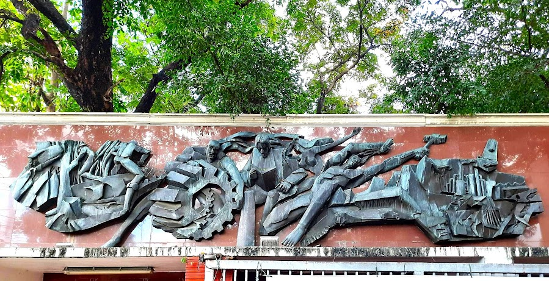

Located at the main gate of the University Mabini Campus. The brass sculpture depicts the purposeful growth of the Filipino youth. It also signifies the role and responsibility of the youth in the progress and development of the nation, which the University recognizes. As an institution dutifully concerned in shaping the lives of the youth, the University pays tribute to the hope and builder of the world tomorrow through this artistic interpretation.